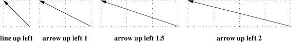
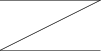
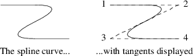
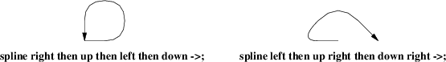

It is possible to specify diagonal lines or arrows by adding multiple up, down, left, and right modifiers to the line object. Any of these can have a multiplier. To understand the effects, think of the drawing area as being gridded with standard-sized boxes.

Figure 5-1: Diagonal arrows (dotted boxes show the implied 0.5-inch grid)
A “line” or “arrow” object may actually be a path consisting of any number of segments of varying lengths and directions. To describe a path, connect several line or arrow commands with the keyword then.

Figure 5-2: line right 1 then down .5 left 1 then right 1
If a path starts with then, the first segment is assumed to be into the current direction, using the default length.
If you start a path with the spline keyword, the path vertices are treated as control points for a spline curve fit.

Figure 5-3: spline right 1 then down .5 left 1 then right 1
You can describe many natural-looking but irregular curves this way. For example:

Figure 5-4: Two more spline examples
Note the arrow decorations. Arrowheads can be applied naturally to any path-based object, line or spline. We’ll see how in the next section.